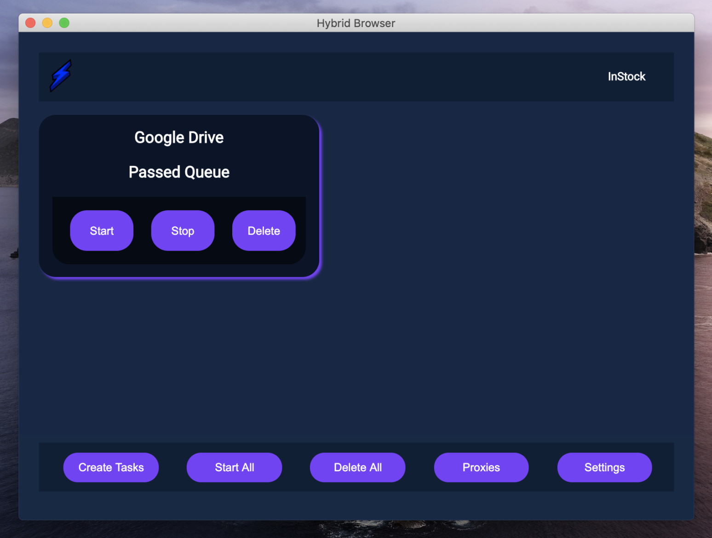

hybrid browser
back
- date of completion: 09-13-2020
- made possible with:
- description:
- hybrid browser is a cross-platform tool which allows users to automate their browser experience
- users can form "tasks" which open a chrome browser to the desired url and monitor the webpage for any changes
- additional task optimization includes proxy support (both user:pass and ip auth allowed) as well as a show-images toggle
